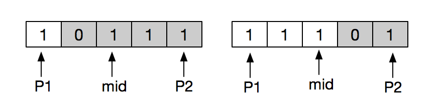

☰ 目录
033 搜索旋转排序数组
链接和考点
| LeetCode |
https://leetcode.com/submissions/detail/119826995/ |
| 考点 |
array, binary_search |
| 难度 |
Medi |
题意
假设按照升序排序的数组在预先未知的某个点上进行了旋转。
( 例如，数组 [0,1,2,4,5,6,7] 可能变为 [4,5,6,7,0,1,2] )。
搜索一个给定的目标值，如果数组中存在这个目标值，则返回它的索引，否则返回 -1 。
你可以假设数组中不存在重复的元素。
你的算法时间复杂度必须是 O(log n) 级别。
示例 1:
输入: nums = [4,5,6,7,0,1,2], target = 0
输出: 4
示例 2:
输入: nums = [4,5,6,7,0,1,2], target = 3
输出: -1
分析
1- 这个题像剑指offer上的题， 不过那个题是找旋转数组的最小值；
2- 采用二分搜索法可以达到O(lgn) 的时间复杂度， 分如下几种情况
- 1） nums[mid] = = target ：刚好找到目标值；
- 2） nums[mid] < nums[right]: 由于是旋转数组， 可以得出
[mid, right] 是升序排列的， 而 [left,mid-1] 可能是先升后降，如下：
5 6 0 1 2 3 4
|
- 3) nums[mid] > nums[right]: 可以得出
[left, mid] 是升序排列的， [mid+1, right] 可能是先降后升， 如下：
3 4 5 6 0 1 2
|
不断重复二分即可， 结束的条件是 left <= right , 防止索引越界。
3- 有一个问题是， 对于重复元素时不适用的，例如 {1, 0, 1, 1, 1} 和数组 {1, 1, 1, 0, 1} 都可看成递增排序数组 {0, 1, 1, 1, 1} 的旋转， 由最小数字分割开的两个子数组分配为：

所以， 最小值可能在mid 的左边， 也可能在mid 的右边，这时候，只能用顺序查找的方式。
参考答案
时间复杂度：
空间复杂度：
答案如下：
C++ 版本如下：
class Solution {
public:
int search(vector<int>& nums, int target) {
if ((int)nums.size() == 0) return -1;
int left = 0, right = (int)nums.size() - 1;
while (left <= right) { // 二分法
int mid = (left + right) / 2;
if (nums[mid] == target) return mid;
// step1：
else if (nums[mid] < nums[right]) {
// step 2: 总是判断是否在有序的那一边，如果不是，另一边无序，再二分，依然是有一半是有序的
if (nums[mid] < target && nums[right] >= target) left = mid + 1;
else right = mid - 1;
} else {
if (nums[left] <= target && nums[mid] > target) right = mid - 1;
else left = mid + 1;
}
}
return -1;
}
};
找最小值
剑指offer中(Page 68)找最小值的一般算法如下：
#include <iostream>
#include <vector>
#include <map>
#include <stack>
using namespace std;
int Min(int* numbers, int length){
if ( numbers == NULL || length <=0 )
throw new std::invalid_argument("Invalid parameters.");
int index1 = 0;
int index2 = length - 1;
int indexMid = index1;
while (numbers[index1] >= numbers[index2]){
if (index2 - index1 == 1){ // 前面比后面大， 刚好找到最小值
indexMid = index2;
break;
}
indexMid = (index1 + index2) / 2;
if ( numbers[indexMid] >= numbers[index1] )
index1 = indexMid;
else if (numbers[indexMid] <= numbers[index2] )
index2 = indexMid;
}
return numbers[indexMid];
}
int main() {
int numbers[5] = {3, 4, 5, 1, 2};
cout << Min(numbers, 5) << endl; // 1
return 0;
}
带重复元素的找最小值
将上面的程序改进如下：
#include <iostream>
#include <vector>
#include <map>
#include <stack>
using namespace std;
int MinInOrder(int* numbers, int index1, int index2){
int result = numbers[index1];
for(int i = index1 + 1; i <= index2; i++){
if( result > numbers[i] )
result = numbers[i];
}
return result;
}
int Min(int* numbers, int length){
if ( numbers == NULL || length <=0 )
throw new std::invalid_argument("Invalid parameters.");
int index1 = 0;
int index2 = length - 1;
int indexMid = index1;
while (numbers[index1] >= numbers[index2]){
if (index2 - index1 == 1){ // 前面比后面大， 刚好找到最小值
indexMid = index2;
break;
}
indexMid = (index1 + index2) / 2;
// 如果三者相等，只能顺序查找
if (numbers[index1] == numbers[index2] && numbers[indexMid] == numbers[index1] )
return MinInOrder(numbers, index1, index2);
if ( numbers[indexMid] >= numbers[index1] )
index1 = indexMid;
else if (numbers[indexMid] <= numbers[index2] )
index2 = indexMid;
}
return numbers[indexMid];
}
int main() {
int numbers[5] = {1, 0, 1, 1, 1};
cout << Min(numbers, 5) << endl; // 0
return 0;
}